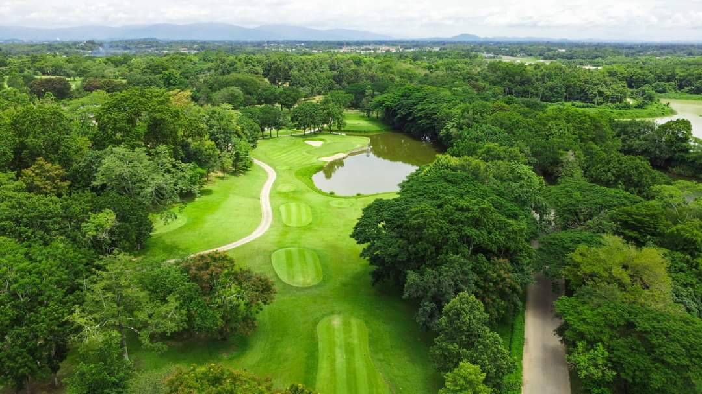
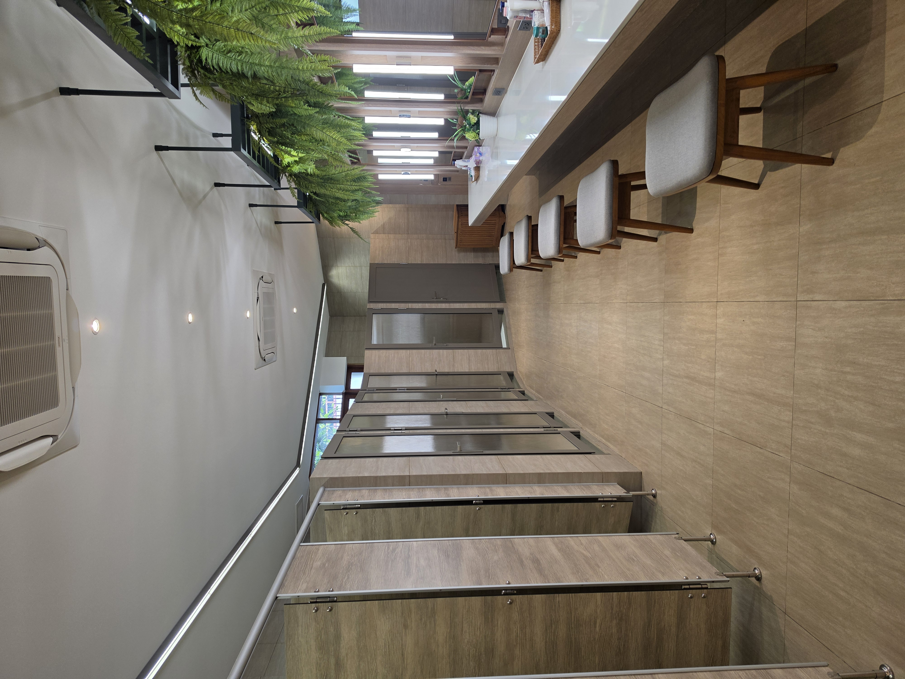

외부 숙소 이용
싼티부리 라운딩 시 숙박은 골프장 외부의 호텔·숙소를 별도로 선택해 이용합니다. 골프장 내 숙박이 포함된 상품으로 안내하지 않습니다.
아름다운 풍경을 감상하는 즐거움과 한 샷 한 샷을 설계하는 전략적 플레이가 만나는 곳.
싼티부리 라운딩 상담 →골프장 라운딩과 외부 숙소를 자유롭게 조합하는 맞춤형 일정
싼티부리 라운딩 시 숙박은 골프장 외부의 호텔·숙소를 별도로 선택해 이용합니다. 골프장 내 숙박이 포함된 상품으로 안내하지 않습니다.
숙박비는 선택한 숙소, 객실 유형, 날짜와 인원에 따라 달라집니다. 고정 숙박비 대신 선택한 숙소 기준으로 개별 견적을 안내합니다.
드라이빙 레인지를 이용할 수 있습니다. 실제 이용 가능 시간과 비용은 라운딩 예약 시 함께 확인해 주세요.
싼티부리 치앙라이 컨트리클럽은 태국 북부의 자연 속에 자리한 18홀, 파72 챔피언십 골프 코스입니다. 세계적으로 알려진 골프 코스 설계가 로버트 트렌트 존스 주니어(Robert Trent Jones Jr.)가 설계한 코스로, 페어웨이의 흐름과 워터 해저드, 벙커 배치를 읽어가며 전략적으로 플레이하는 재미를 선사합니다.
넓게 펼쳐진 녹음과 물길, 나무가 만들어내는 풍경 속에서 매 홀 다른 선택을 요구하는 라운딩을 경험해 보세요.

디자인 참고 사진 · 실제 싼티부리 촬영 사진 아님
싼티부리의 매력은 단순한 비거리 경쟁보다 어디를 겨냥하고 어떤 샷을 선택할지 생각하게 만드는 코스 구성에 있습니다.
초보 골퍼는 코스 매니지먼트의 중요성을 배우고, 경험 많은 골퍼는 자신의 전략을 시험할 수 있습니다.
라운딩 자체가 여행의 기억이 되는 곳
로버트 트렌트 존스 주니어의 설계가 담긴 코스. 홀마다 공략 방향과 위험 요소를 살피는 전략적 재미를 경험할 수 있습니다.
푸른 페어웨이와 수목, 물이 어우러진 환경에서 플레이에 집중하면서 치앙라이 특유의 여유를 느낄 수 있습니다.
부부 여행, 친구 모임, 소규모 골프여행에서 하루의 메인 라운딩으로 소개하기 좋은 선택지입니다.
실제 촬영 사진 확보 후 싼티부리 전용 갤러리로 교체 예정


현재 사진 3장은 디자인 시연용 일반 골프 이미지이며 싼티부리의 실제 모습이나 시설을 증명하지 않습니다. 상업적 사용 전 라이선스를 확인하세요.
| 골프장 | Santiburi Country Club Chiang Rai |
|---|---|
| 코스 | 18홀 · Par 72 |
| 설계 | Robert Trent Jones Jr. |
| 위치 | 태국 치앙라이 지역 (정확한 주소 및 이동시간은 예약 시 확인) |
| 예약 | 희망 날짜·인원·티오프 시간에 따라 별도 상담 |
| 이용 요금 | 그린피·캐디피·카트비·팁 등 시즌 및 예약 조건에 따라 확인 |
| 준비 사항 | 골프 복장·개인 장비·현지 기상 및 이용 규정 사전 확인 |
코스 정보 외 가격·운영시간·시설·예약 가능 여부는 시기에 따라 달라질 수 있으므로 확정 견적 전 공식 확인이 필요합니다.
직접 촬영하거나 사용 허가를 받은 사진을 추가하면 자동으로 표시됩니다.



